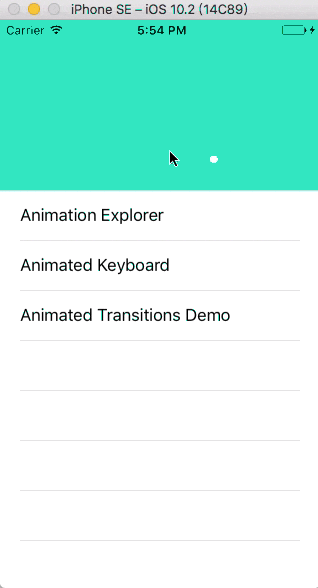
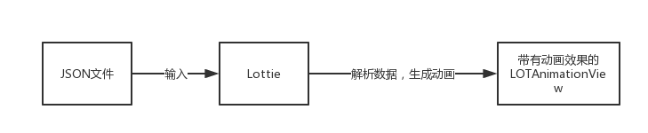
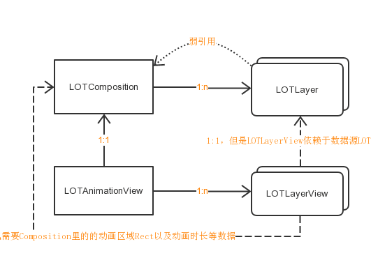
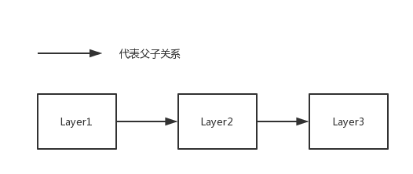
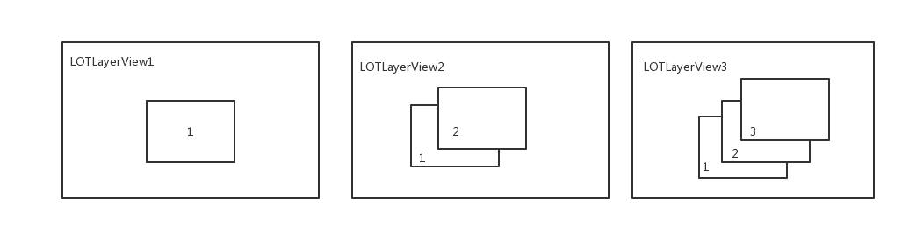
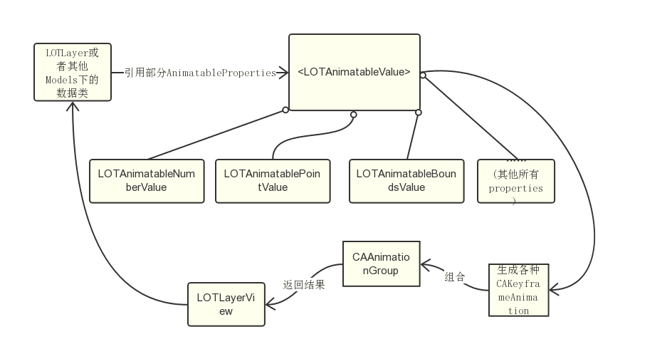
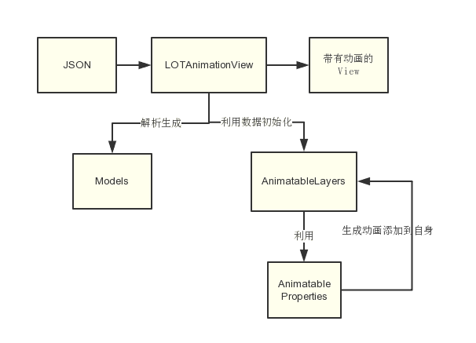

Yep，finally，eventually，迎来了我的第一篇源码解读类的文章。相比之前粗略看过的ASDK，Lottie可谓是对开发者来说十分之不友好——因为几乎没有注释，本文作为自己的学习记录，也给大家参考。
Lottie的官方Demo的一开始是一个很酷炫的header，以及一个只有三行的tableView：

从每一行里点进去就发现第二个是一个打字相关的动画（显然作者把A-Z的字母显示都用AfterEffects做了一套动画用在了这里），第三行则是一个页面切换的动画。第一行里则是一个让你浏览整个demo里用到的动画的view——这里的动画甚至不是播放的，而是可以自己拖动进度条来带动变化。在第一第二行对应的demo里着重用到了lottie里的一个类——LOTAnimationView来显示动画，而在Animated Transition Demo中则是着重使用LOTAnimationTransitionController，跳到LOTAnimationTransitionController里看一看，原来这个controller不过是一个实现了<UIViewControllerAnimatedTransitioning>协议，结合LOTAnimationView来实现页面动画切换的一个类而已。
所以，非常明显，Lottie始于LOTAnimationView。
在我们开始进一步地阅读Lottie的源码之前，我们必须得搞明白Lottie总的来说干了什么，还有我写这篇文章的目的是什么。首先Lottie的作用就是你输入一个由AE制作的动画再由其插件bodymovin转成的JSON，然后Lottie就将里面的动画添加到LOTAnimationView之上并返还给你。

都说阅读源码就像拼图，一块块的找到缺失的拼图块，最后把拼图完成，你也就读懂了这个源码，而这幅示意图就是拼图的主线。所以现在我们知道，Lottie干了两件事——接收JSON文件解析获得数据，并把数据用来生成动画并最后返回给你一个可视的view。而这篇文章的目的，是要告诉你它是怎么获得数据的，获得了哪些数据，怎么封装的，还有整个项目的结构以及它用到的核心技术。Lottie生成动画的核心技术是使用了苹果的动画库Core Animation，但是由于我才疏学浅，对Core Animation了解不深，所以也是边查边阅读的源码，如有理解上的错误还望指出纠正。
那么，正文开始。哦还有，本文解析的是Lottie-iOS，如果想看别的版本的解析，请移步别处，并且Lottie里关于Mac OS的部分，只会有少量的解释甚至不解释。
看到源码，我们可以发现LOTAnimationView继承自LOTView，LOTView实际上只是个一个换名的类，对于iOS而言LOTView就是UIView，对于MacOS而言，就是NSView，显然它是为了适配Mac而存在的。
打开LOTAnimationView.m，看到类方法：+ (instancetype)animationNamed:(NSString *)animationName
这毕竟是一个专门用来初始化的工厂方法，很好用来作为开始，代码也很好懂，animationName就是JSON文件对应的名字，方法最开始先取出文件的名字，然后从LOTAnimationCache里取出LOTComposition的缓存，先将后者放到一边，结合官方文档所提到的LRU缓存策略，我们来讲讲LOTAnimationCache。
打开LOTAnimationCache.h，可以看到这是一个单例，还有简单的存取方法。下移一格，来到LOTAnimationCache.m，我们可以看到它只有两个ivar，一个NSMutableDictionary *animationsCache_和一个NSMutableArray *lruOrderArray_。如果你学过操作系统，你就知道LRU算法是一种淘汰最近最少使用的项目的算法。而LOTAnimationCache的字典用来存放<动画名，LOTComposition>的数据，而lruOrderArray_则是维持了一个lru序列，里面全是动画名。
- (void)addAnimation:(LOTComposition *)animation forKey:(NSString *)key {
if (lruOrderArray_.count >= 50) {
NSString *oldKey = lruOrderArray_[0];
[animationsCache_ removeObjectForKey:oldKey];
[lruOrderArray_ removeObject:oldKey];
}
[lruOrderArray_ removeObject:key];
[lruOrderArray_ addObject:key];
[animationsCache_ setObject:animation forKey:key];
}从代码来看，缓存最多存储50个动画，最近使用的动画放在lru序列的最末端，最少使用的放在序列的开始，便于淘汰。简简单单50多行代码，便实现了一个LRU缓存，存储的对象还可以是各种酷炫的动画，实在是太简洁了。但是之所以这个cache可以这么简洁，也是因为动画的数据早已被完整地封装在了LOTComposition里了。
从项目的结构上看，LOTComposition放在Models文件夹下，那么它是一个数据层。其次它被用来直接初始化LOTAnimationView(- (instancetype)initWithModel:(LOTComposition *)model)，而且cache存放的对象就是它，所以它代表着一个动画的数据。让我们看看LOTComposition都有些什么样的属性，看看一个完整的动画都需要哪些数据。composition有一个装了多个LOTLayer的数组，还有一些属性，分别代表动画区域、开始／结束帧、帧率、动画时长。所有的这些数据，都源于对JSON文件的解析，然后特定的属性对应了一些特定的key，这些都是bodymovin约定好了的，知道这些key就可以获取到对应的数据，这些从LOTComposition的实现就可以看出来。
在LOTComposition的属性里，其他的都很好理解，只有一个@property (nonatomic, readonly) NSArray <LOTLayer *> *layers
让人不能一眼看明白。LOTLayer一开始让我也非常困惑，它看起来似乎像是CALayer的子类，而且看起来它是实现动画了的地方。实则不然，它依然存放在models文件夹下，而且它继承自NSObject，所以说，这依然是一个数据类，而它存放的则是一个图层的动画所需要的数据。而一个复杂的动画可能会由多个layer的动画组合而成，这就是为什么composition里面会有一个装了多个LOTLayer的数组。至于LOTLayer里有些什么数据，又是干什么的，我这里先不说，请接着往下看。
来到+animationNamed：的最后一行，我们看到调用了-initWithModel:初始化函数。为了方便大家理解LOTAnimationView的初始化干了什么，下面贴上带有我的注释的-initWithModel:：
- (instancetype)initWithModel:(LOTComposition *)model {
self = [super initWithFrame:model.compBounds];
if (self) {
//初始化AnimationContainer，这是一个展示动画的CALayer容器
[self _initializeAnimationContainer];
//用LOTComposition对self进行配置
//主要是往_animationContainer添加带有动画效果的LOTLayerView、寄存各layer和寄存动画的状态
[self _setupWithSceneModel:model restoreAnimationState:NO];
}
return self;
}-initWithModel:方法里主要执行了两个方法，第一个方法主要是为了初始化动画的容器CALayer *_animationContainer；第二个方法，我们主要讲讲其中是如何初始化带有动画效果的LOTLayerView并将它们添加到_animationContainer中的，藉此我们可以顺便一窥LOTLayerView的究竟。下面先贴一个经我简化的- (void)_buildSubviewsFromModel方法，这是LOTAnimationView利用初始化好的LOTComposition来初始化动画图层的方法，它在_setupWithSceneModel:restoreAnimationState:中被调用（注意看我在代码上加的注释，已经很好地解释了这段代码的作用）：
- (void)_buildSubviewsFromModel {
//一串清除旧动画的代码
//调整动画容器的仿射变换和大小
_animationContainer.transform = CATransform3DIdentity;
_animationContainer.bounds = _sceneModel.compBounds;
//初始化存放动画图层的字典
NSMutableDictionary *layerMap = [NSMutableDictionary dictionary];
NSMutableDictionary *layerNameMap = [NSMutableDictionary dictionary];
//我也不知道为啥要取倒序，在LOTComposition里初始化layers的时候是正序的
//说明取出来的layer可能是由顶至底排布的吧...
NSArray *reversedItems = [[_sceneModel.layers reverseObjectEnumerator] allObjects];
LOTLayerView *maskedLayer = nil;
//来了，这个for循环就是将LOTCompostion里的layers逐个取出用来初始化成一个个的LOTLayerView
//并将它们加到_animationContainer上
//LOTLayerView是真正运用了动画的地方，继承自CALayer，所以它本质上是一个layer而非view
for (LOTLayer *layer in reversedItems) {
LOTLayerView *layerView = [[LOTLayerView alloc] initWithModel:layer inComposition:_sceneModel];
layerMap[layer.layerID] = layerView;
layerNameMap[layer.layerName] = layerView;
//这个if-else也让人比较困惑，这是因为有些layer是有mask的
//在for循环里如果找到一个有mask的layer，就将它设为maskedLayer
//在下一个循环里的layer就必然是它的mask，到时就将它设为maskedLayer.mask
if (maskedLayer) {
maskedLayer.mask = layerView;
maskedLayer = nil;
} else {
if (layer.matteType == LOTMatteTypeAdd) {
maskedLayer = layerView;
}
[_animationContainer addSublayer:layerView];
}
}
_layerMap = layerMap;
_layerNameMap = layerNameMap;
}看了上面的代码，我想你应该明白了LOTAnimationView是如何控制好数据层和动画层的关系，而且上面也引入了一个重要的类——LOTLayerView——它本质上是一个CALayer，也是真正运用了动画的地方。那么在LOTLayerView里一定也有许多有趣的动画技术等着我们去了解，但在我们更加深入之前，我们得理清一下我们现在所接触到的类以及它们的关系。
一直看着代码和文字解释一定让人头昏脑胀，现在让我贴上一张关系示意图：

从图中来看，下半部分是一个整合了所有动画图层的view和所有的动画图层LOTLayerView，上半部分则是两个数据大头LOTComposition和LOTLayer。外部数据JSON从LOTAnimationView中流入，被解析进入到LOTComposition和LOTLayer里，最后LOTAnimationView再利用解析好的LOTLayer初始化所有的图层LOTLayerView并添加到自己的CALayer容器里，那么一个从AE里导出的动画就生成了。
LOTLayerView，我们依然从它的初始化方法看起。-initWithModel:inComposition:没啥特别，存储两份数据到ivar里，然后开始配置自身。来看-(void)_setupViewFromModel，这个方法非常长，我试着在能解释清它是什么的基础上尽量删减。
- (void)_setupViewFromModel {
//省略代码，配置自身基本属性
//看来LOTLayerView和LOTAnimationView一样，都有一个CALayer作为容器
_childContainerLayer = [CALayer new];
_childContainerLayer.bounds = self.bounds;
_childContainerLayer.backgroundColor = _layerModel.solidColor.CGColor;
//solid应该是一个背景色图层
if (_layerModel.layerType == LOTLayerTypeSolid) {
_childContainerLayer.bounds = CGRectMake(0, 0, _layerModel.solidWidth.floatValue, _layerModel.solidHeight.floatValue);
_childContainerLayer.backgroundColor = nil;
_childContainerLayer.masksToBounds = NO;
CALayer *solid = [CALayer new];
solid.backgroundColor = _layerModel.solidColor.CGColor;
solid.frame = _childContainerLayer.bounds;
solid.masksToBounds = YES;
[_childContainerLayer addSublayer:solid];
}
//这是一个疑难part，一个注释说不清楚，将在下面讲解，打上标记1⃣️
NSNumber *parentID = _layerModel.parentID;
CALayer *currentChild = _childContainerLayer;
NSMutableArray *parentLayers = [NSMutableArray array];
if (parentID) {
while (parentID != nil) {
LOTLayer *parentModel = [_composition layerModelForID:parentID];
LOTParentLayer *parentLayer = [[LOTParentLayer alloc] initWithParentModel:parentModel inComposition:_composition];
[parentLayer addSublayer:currentChild];
[parentLayers addObject:parentLayer];
currentChild = parentLayer;
parentID = parentModel.parentID;
}
}
if (parentLayers.count) {
_parentLayers = parentLayers;
}
[self addSublayer:currentChild];
//设置容器layer的基本属性的初始值，即动画开始前的值
_childContainerLayer.opacity = _layerModel.opacity.initialValue.floatValue;
_childContainerLayer.position = _layerModel.position.initialPoint;
_childContainerLayer.anchorPoint = _layerModel.anchor.initialPoint;
_childContainerLayer.transform = _layerModel.scale.initialScale;
_childContainerLayer.sublayerTransform = CATransform3DMakeRotation(_layerModel.rotation.initialValue.floatValue, 0, 0, 1);
self.hidden = _layerModel.hasInAnimation;
//这里省略一大段代码，取出LOTLayer里会出现的形状，这时候终于涉及到Models文件夹里的诸多数据模型
//还有AnimatableLayer文件夹下的各种各样的图层
//这里就是用Models下的各种类型的shape数据来对应生成的带动画的layer，并加到container上
//为了清楚的解释这里发生了什么，也先打上标记2⃣️，稍后解释
//如果有mask动画，则加上
if (_layerModel.masks) {
_maskLayer = [[LOTMaskLayer alloc] initWithMasks:_layerModel.masks inComposition:_composition];
_childContainerLayer.mask = _maskLayer;
}
//这段代码不明其意，不知道是不是开发到一半commit了
NSMutableArray *childLayers = [NSMutableArray array];
[childLayers addObjectsFromArray:_parentLayers];
[childLayers addObjectsFromArray:_shapeLayers];
if (_maskLayer) {
[childLayers addObject:_maskLayer];
}
//构建动画
[self _buildAnimations];
}好了，大意知道了，我们可以深入聊一下刚刚打了标记的两个代码块。首先说说1⃣️标记的while循环。
首先，从前文我们就知道了Lottie会在LOTAnimationView里根据LOTLayer初始化所有的LOTLayerView，但是这里的while循环很奇怪，这里说明每个LOTLayerView还会随着LOTLayer里的parentID通过LOTComposition找到一个父LOTLayer来初始化一个LOTParentLayer（这玩意本质和LOTLayerView一样，都是带有动画的CALayer），然后将子layer加到父layer之上，在while循环里重复这个操作直到找到祖先为止。那所有的LOTLayerView叠加到LOTAnimationView之上并非都是单一的图层，每个LOTLayerView又有自己的一条图层链，而且LOTLayerView的图层链里的图层又有可能和别的LOTAnimationView的图层链里的某个图层在数据上一模一样（内存不一样）。这里绕得都快可以rap出来了，所以我决定举例子再解释一遍。
来看一个极端情况：

如图，假设一个动画总共有三个图层，然后关系是1是2的父，2是3的父。那么我们来看看它们最后在LOTAnimationView上生成的结果是什么样的：

这就是最后会在LOTAnimationView上会生成的三个LOTLayerView，第一个layerView挺正常的，但是到了第二个layerView里，我们发现会存在一个和第一个layerView里用同样的LOTLayer生成layer，第三个layerView里面则有两个重复layer。这样做不觉得很浪费内存么？既然这些layer从值上是一模一样的，为什么不干脆共用呢？
这里有一个原因是，子layer的动画是基于父layer的动画之上实现的，比如父layer的动画速度是2，子layer也是2的画，那子layer的绝对速度就是4。所以必须要有父layer的动画支持，子layer的动画才能正确实现。但是就算是为了正确性，layer难道不能共用么？上面的例子比如只要一个LOTLayerView3是不是就有正确的动画效果了。
为了验证我的这个想法，我决定在Lottie的github上发个issue问一下，迟点有答复了再来更新这篇文章。
更新：
lottie-ios的作者很快就回复了我的issue，他是这么说的：
Hey! Thank you for the interest in Lottie and for looking through the source code!
First a bit of backstory on how parenting works in after effects vs ios. In after effects you can parent a layer to another layer. Though they call it parenting, it has a different meaning than what we are use to in the UIKit world. When a layer is parented to another layer it simply follows the transform of the "Parented" layer and offsets itself accordingly. Any other modifications to the parent layer do not affect the child layer.
So when looping through the parent views I am creating LOTParentLayer(s) which are stripped down layers that only contains a single CALayer and just the transform animation.
Doing this allows layers to be parented to other layers so they move in unison. We aren't actually parenting the layers but building a simple coordinate hierarchy above the child layer.
This also avoids any errors that would come from a parent layer being hidden but the child layer being visible.
大意就是UIKit和AE的层叠关系是不太一样的，AE的父图层仅仅只会有仿射变换和位置影响到子图层，所以LOTParentLayer正是模仿了这一点，只在一个layer上运用了少部分的动画，并添加到子图层之前，让子图层的动画可以正确的进行。所以它相当于一个删减了许多动画的LOTLayerView，本质上是不一样的。
好了，LOTLayerView里的layer也基本构建完成，还差最后的往layer添加animation的环节，Lottie的解读也就完成了！但是在那之前，我们还有个麻烦需要解决，那就是刚刚标记了2⃣️的代码块。
这段代码里，涉及到了AnimatableLayer文件夹下除了LOTLayerView的以外的layer，这是因为LOTLayer里还会有一些形状变化类型的动画数据，存储在LOTLayer.shapes里，这些数据又被封装好在Models文件夹的各种类里。原因是因为一个最顶层的LOTLayer对应的layer只负责一些简单的比如透明度，位置，锚点，仿射变换，旋转等等的keypath动画，还有一些不规则的形变或者色变型动画则存于shapes里，每一种做一个单独的图层，最后添加到LOTLayerView之上，最终形成一个完整的动画图层。
画条分割线，深呼吸一下，再来看看添加动画的过程吧！
- (void)_buildAnimations {
NSMutableDictionary *keypaths = [NSMutableDictionary dictionary];
if (_layerModel.opacity) {
[keypaths setValue:_layerModel.opacity forKey:@"opacity"];
}
if (_layerModel.position) {
[keypaths setValue:_layerModel.position forKey:@"position"];
}
if (_layerModel.anchor) {
[keypaths setValue:_layerModel.anchor forKey:@"anchorPoint"];
}
if (_layerModel.scale) {
[keypaths setValue:_layerModel.scale forKey:@"transform"];
}
if (_layerModel.rotation) {
[keypaths setValue:_layerModel.rotation forKey:@"sublayerTransform.rotation"];
}
if (_layerModel.positionX) {
[keypaths setValue:_layerModel.positionX forKey:@"position.x"];
}
if (_layerModel.positionY) {
[keypaths setValue:_layerModel.positionY forKey:@"position.y"];
}
_animation = [CAAnimationGroup LOT_animationGroupForAnimatablePropertiesWithKeyPaths:keypaths];
if (_animation) {
[_childContainerLayer addAnimation:_animation forKey:@"LottieAnimation"];
}
//省略一段关于淡入淡出动画的代码
}Lottie最终使用了CAKeyframeAnimation来生成动画。而我们知道CAKeyframeAnimation被用于CALayer之上，是一种用keypath来生成的动画。这个_build方法的开头就给出一个塞入了keypath的字典，@"opacity"用来控制layer的透明度变化、@"position"用来控制layer的位置变化……如此类推。但是值得注意的是这个字典里的value全都是AnimatableProperties文件夹下的类，而这些properties都有个特征，就是它们都遵循于<LOTAnimatableValue>协议，满足这个协议使得这些property必须具有从数据转换成CAKeyframeAnimation的能力。
了解了这些，接着让我们来看Lottie里的一个CAAnimationGroup的类别，里面有一个方法:+ (nullable CAAnimationGroup *)LOT_animationGroupForAnimatablePropertiesWithKeyPaths:(nonnull NSDictionary<NSString *, id<LOTAnimatableValue>> *)properties;
也是上面代码块中被用来生成_animation的方法。这个方法通过将LOTLayer下的animatableProperties转化成一个个CAKeyframeAnimation并将它们加到一个CAAnimationGroup里，最后返还结果。这个方法就是将数据变成动画的方法。那么layer有了，动画有了，Lottie也完成了。
先来讲讲Lottie里一个比较有趣的设计模式——AnimatableProperties文件夹下的所有类都遵循于<LOTAnimatableValue>，实现其中的-(CAKeyframeAnimation *)animationForKeypath:(NSString *)keypath便于方便和快速地将数据转化为CAKeyframeAnimation。

由于涉及到的类众多，而Lottie也用文件夹区分好了这些类，那我在介绍Lottie的整体架构的时候就不用类名而用Lottie的文件夹名来做解释吧。首先，JSON从LOTAnimationView进入（这里没办法，文件夹名没很好的表达出这个类的意思）。然后进入到Models解析并存储，紧接着利用Models初始化AnimatableLayers，AnimatableLayers在初始化过程中利用传入的Models里的AnimatableProperties生成CAKeyframeAnimation添加到自身之上，最后返还给LOTAnimationView，这就是整个Lottie的运作机制。
上个整体架构图：

那么，拼图完整了，Lottie解读完毕！
这是一篇记录踩坑的文章，而不是教程，所以如果你打算用这篇文章开启你ShareExtension世界的大门，那么你来错地方了。但是如果你已经对ShareExtension有所了解，打算开发一个ShareExtension，那这篇文章所提到的内容将有可能对你有所帮助。假如你写过ShareExtension，那么你知道一段从extension里获取所选文件的过程可能长这样：从代码里可以看到，为了取到数据，我嵌套遍历了很多重。你要在share extension里面获取到用户所选取的文件，你得通过sel……
继续阅读这个问题困扰了我许久了，于是今天我决定终结这个疑惑。我谷歌了一下这个问题，于是在stackOverflow上看到了不同的答案，其中一个回答是说WWDC2015中的一个视频“Implementing UI Designs in Interface Builder”里的Apple工程师是这么说的： And the last option I want to point out is the storage type, which can either be strong or weak. In g……
继续阅读